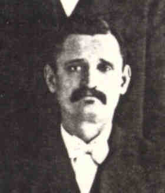

|
|
|
|
|
|
|
 John GEDEON (1858-1903) |
John GEDEON
• Emigration, Abt 1884, Austria-Hungary. 3 • Census: 1900, 7 Jun 1900, Pittsburgh, Allegheny, PA. 3 John and his family lived at 135 Manton St. • Occupation: Teamster. 3 John married Maria STARK, daughter of Andreas STARK and Francisca SCHMOCZER, on 15 Jan 1882 in Ober-Metzenseifen, Austria-Hungary.1 (Maria STARK was born on 28 May 1859 in Ober-Metzenseifen, Austria-Hungary 2 3 5 6, baptized on 29 May 1859 in Ober-Metzenseifen, Austria-Hungary,2 died in 1937 in Pittsburgh, Allegheny, PA 5 and was buried in St. George Cemetery, Pittsburgh, Allegheny, PA 5.) |
1 St. Mary Magdalene Parish Register, Marriage Records, 1873-1894 (Ober Metzenseifen, Slovakia (LDS Film 2010723)).
2 St. Mary Magdalene Parish Register, Christening Records, 1807-1886 (Ober Metzenseifen, Slovakia (LDS Film 2010722)).
3 Pennsylvania, Allegheny County, 1900 U.S. Census, Population Schedule (Washington, D.C., National Archives and Records Administration), ED 309, Sheet 7, Line 6.
4 City of Pittsburgh, Death Certificate - John Gedeon (Pittsburgh, PA, 13 May 1903).
5 Thomas Hoey, Cemetery Headstone, St. George Cemetery (Pittsburgh, PA, 31 Jul 1999).
6 Mary Anne Kraemer Wojszynski, Letter to Thomas Hoey (Pittsburgh, PA, 3 Jun 1999).